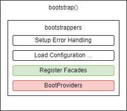

8.2 Service Providers
One of the bootstrappers that the bootstrap() method calls is the BootProviders bootstrapper.

The Illuminate\Foundation\Bootstrap\BootProviders::class is responsible for booting the service providers.
The BootProviders bootstrapper calls the boot() method on the application's ProviderRepository.
This boot() method is responsible for booting the service providers.
The list of service providers to be booted is defined in the config/app.php file under the providers key.
The ProviderRepository uses this list to instantiate each service provider and call its register() method, followed by its boot() method if it exists.
A Service Provider is a class that extends the Illuminate\Support\ServiceProvider class.
A Service Provider can use the register() and boot() methods that it inherits from the abstract class ServiceProvider in order to define its behaviour.
register():
Within the register method, you should only bind things into the service container.
boot():
This method is called after all other service providers have been registered, meaning you have access to all other services that have been registered by the framework.
Because every Service Provider extends the Service Provider abstract class, every Service Provider have access to the $app property which provides access to the service container.
Registering Providers
As we mentioned earlier,
All service providers are registered in the
config/app.phpconfiguration file. This file contains aprovidersarray where you can list the class names of your service providers.
The following is the snippet of code of the default providers array that comes with a fresh Laravel install:
'providers' => ServiceProvider::defaultProviders()->merge([
/*
* Package Service Providers...
*/
/*
* Application Service Providers...
*/
App\Providers\AppServiceProvider::class,
App\Providers\AuthServiceProvider::class,
// App\Providers\BroadcastServiceProvider::class,
App\Providers\EventServiceProvider::class,
App\Providers\RouteServiceProvider::class,
])->toArray(),
Based on the previous information it should be obvious that every Service Provider must:
- extend the
ServiceProviderclass - be registered in the
providersarray
AppServiceProvider
Laravel comes shipped with an empty and already registered Service Provider called AppServiceProvider. In the app/Providers directory.
Thus, the AppServiceProvider can be used to quickly register or boot services without the need of creating a standalone Service Provider and registering it.
However, you can always create a standalone Service Provider and register it for a better Separation of Concerns.
In essence as a Laravel framework user, you can use the Service Providers to bind Services to the Laravel Service Container with a certain degree of control and without the need to interact directly with the initial bootstrapping of the application instance.